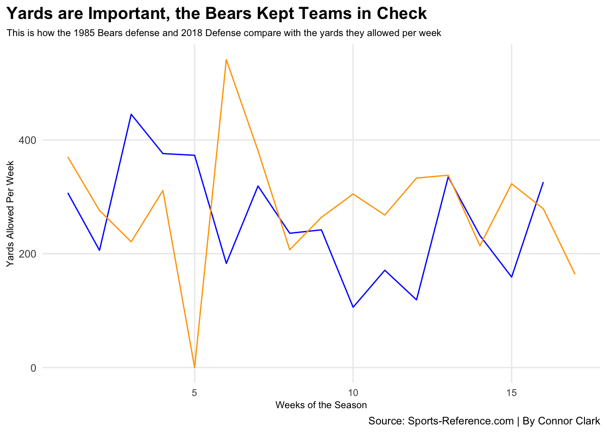
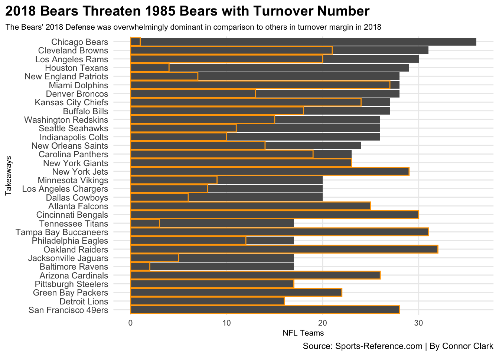
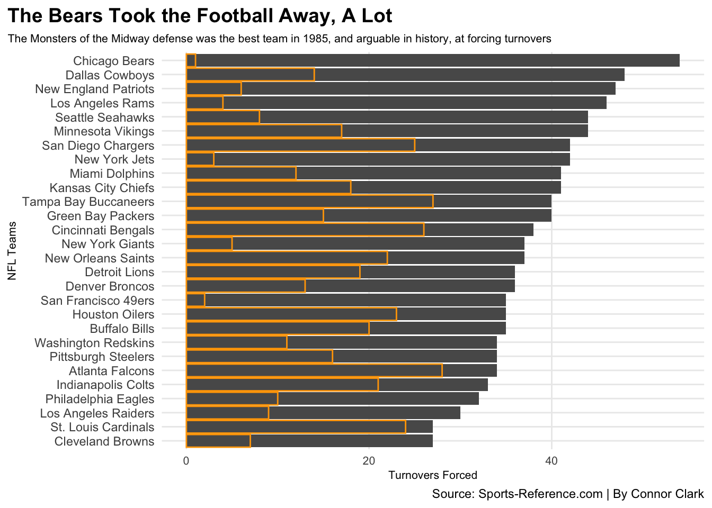
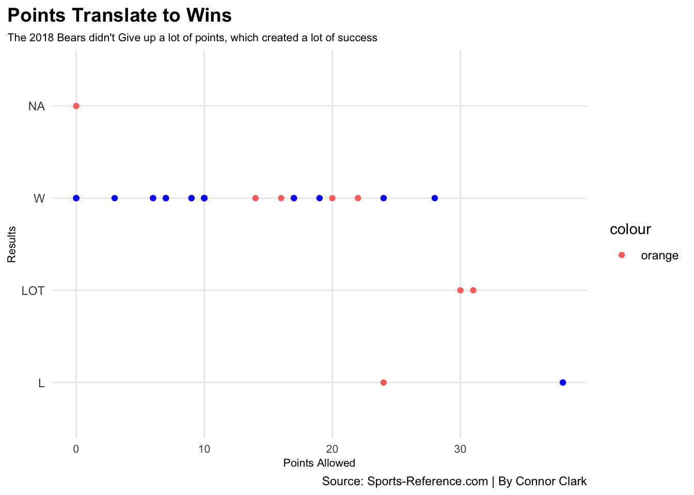

Comparing Chicago Bears’ Defenses, Some of the Best Ever
NFL
Bears
Defense
Author
Connor Clark
Published
December 4, 2022
Since the beginning of time, or at least it feels as such, the Chicago Bears have always had the identity of defense wins championships. In 1985, that saying proved to be true as the Bears did go on to have a 15-1 record and win Super Bowl XX (20) over the New England Patriots.
Fast forward 33 years and it seemed like the Bears had yet another record breaking defense after a couple of off-season moves, all of which were highlighted by the acquisition of Khalil Mack from the Raiders. The season ran its course, and yes the Bears had yet another physical, electric, record breaking defense on the field every Sunday.
Many fans and media members started wonder how good this 2018 defense really was and how it stacked up to some of the best defensive units ever to play in the National Football League, so here we are comparing 2018 to 1985.
Let’s knock out a comparison which uses a stat that is important for defenses, but not the end all be all, which is yards given up per game. Now yards can translate into points, but not all the time. Here is how the two units from Chicago stack up.
Code
library(tidyverse)X2018_NFL_Defense <-read_csv("2018_NFL_Defense.csv")X1985_NFL_Defense <-read_csv("1985_NFL_Defense.csv")X1985Bears <-read_csv("1985Bears.csv")X2018Bears <-read_csv("2018Bears.csv")ggplot() +geom_line(data=X1985Bears, aes(x=Week, y=TotalYds), color="blue") +geom_line(data=X2018Bears, aes(x=Week, y=TotalYds), color="orange") +labs(x="Weeks of the Season", y="Yards Allowed Per Week", title="Yards are Important, the Bears Kept Teams in Check", subtitle="This is how the 1985 Bears defense and 2018 Defense compare with the yards they allowed per week", caption="Source: Sports-Reference.com | By Connor Clark" ) +theme_minimal() +theme(plot.title =element_text(size =14, face ="bold"),axis.title =element_text(size =8), plot.subtitle =element_text(size=8), panel.grid.minor =element_blank(),axis.text.x =element_text(size=8), plot.title.position ="plot")

Overall the two were pretty consistent, other than the bears giving up 400+ in 2018 in week six of the season, and the zero number in week five which was the 2018’s squad’s bye week. What is really impressive is that the 1985 unit only allowed 400+ yards one time, and yes offenses have changed a lot since then, it is still an impressive feat.
Now, let’s move onto what is arguably the most exciting stat for a defensive unit, turnovers. These groups forced a lot of them which is one of many components that make up the nickname “Monsters of the Midway.”
The turnover margin is one that caught many NFL fans eyes in 2018 and prompted that discussion of all time greatness. The 2018 group made great quarterbacks of that season such as Aaron Rodgers, Russell Wilson, and Jared Goff (at the time) look very pedestrian and sometimes just down right bad. Let’s take a look at what the 2018 group was able to do in the turnover battle, and how they compared to the rest of the league that season.
Code
ggplot() +geom_bar(data=X2018_NFL_Defense, aes(x=reorder(Team, Takeaways), weight=Takeaways)) +geom_bar(data=X2018_NFL_Defense, aes(x=reorder(Team, Takeaways), weight=Rank), color="orange") +coord_flip() +labs(x="Takeaways", y="NFL Teams", title="2018 Bears Threaten 1985 Bears with Turnover Number", subtitle="The Bears' 2018 Defense was overwhelmingly dominant in comparison to others in turnover margin in 2018", caption="Source: Sports-Reference.com | By Connor Clark" ) +theme_minimal() +theme(plot.title =element_text(size =14, face ="bold"),axis.title =element_text(size =8), plot.subtitle =element_text(size=8), panel.grid.minor =element_blank(),axis.text.x =element_text(size=8), plot.title.position ="plot")

Shifting over the the amount of turnovers the 1985 unit forced, well honestly it just isn’t fair when you look at the numbers. In just 16 regular season games, the Bears forced over 40 plus turnovers, and 7 in one game to close out the regular season. I think it is safe to say that 1985 wins this round.
Code
ggplot() +geom_bar(data=X1985_NFL_Defense, aes(x=reorder(Team, Takeaways), weight=Takeaways)) +geom_bar(data=X1985_NFL_Defense, aes(x=reorder(Team, Takeaways), weight=Rank), color="orange") +coord_flip() +labs(x="NFL Teams", y="Turnovers Forced", title="The Bears Took the Football Away, A Lot", subtitle="The Monsters of the Midway defense was the best team in 1985, and arguable in history, at forcing turnovers", caption="Source: Sports-Reference.com | By Connor Clark" ) +theme_minimal() +theme(plot.title =element_text(size =14, face ="bold"),axis.title =element_text(size =8), plot.subtitle =element_text(size=8), panel.grid.minor =element_blank(),axis.text.x =element_text(size=8), plot.title.position ="plot")

To be quite honest with you, both of these numbers are absolutely staggering and lead the league in their respective seasons. It also interesting to see how the Cleveland Browns for example were dead last in turnovers forced in 1985, but were second behind the Bears in 2018.
Last, but most certainly not least, in fact the most important, is the points these defenses gave up. Points scored, and points given up translate to results, and in this case its the less points given up equal more wins that the team has. Here is a scatterplot below that includes both the 1985 unit and 2018 unit and how many wins each team got based on the amount of points they surrendered. The orange is the 2018 team, the blue being the 1985 team.
(FYI: The defenses sometimes gave up the same amount of points, that is why there is only one dot visible for some results.)
Code
ggplot() +geom_point(data=X2018Bears, aes(x=OppScore, y=Result,color="orange")) +geom_point(data=X1985Bears, aes(x=OppScore, y=Result), color="blue") +labs(x="Points Allowed", y="Results", title="Points Translate to Wins", subtitle="The 2018 Bears didn't Give up a lot of points, which created a lot of success", caption="Source: Sports-Reference.com | By Connor Clark" ) +theme_minimal() +theme(plot.title =element_text(size =14, face ="bold"),axis.title =element_text(size =8), plot.subtitle =element_text(size=8), panel.grid.minor =element_blank(),axis.text.x =element_text(size=8), plot.title.position ="plot")

As you can see, the 1985 Bears suffered one loss all year and that was the only game where they gave up 30+ points in a game. The 2018 squad did that twice and lost both of those games, each reaching overtime. In all honesty the 2018 Bears lost four regular season games that they really shouldn’t have, but hey that’s football sometimes.
Overall, the 1985 Bears defense is statistically better to this day, but the amount of changes that happened in the style of play in the NFL in that 33 year span and the stats the 2018 defensive unit put up, the conversation of comparison between the two was and honestly still is warranted. Even though I wasn’t alive to watch the 1985 Bears, the 2018 group was still a damn fun unit to watch go out and dominate each and every single week en route to a division title.